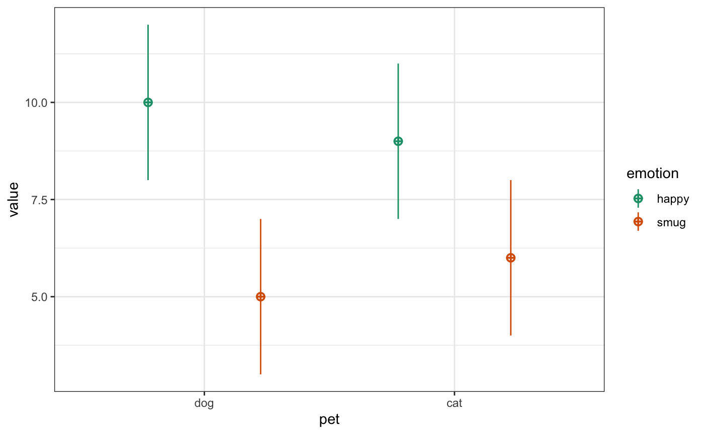

library(scienceverse)
#>
#> ************
#> Welcome to scienceverse For support and examples visit:
#> http://scienceverse.github.io/
#> - Get and set global package options with: scienceverse_options()
#> ************
library(faux)
#>
#> ************
#> Welcome to faux. For support and examples visit:
#> http://debruine.github.io/faux/
#> - Get and set global package options with: faux_options()
#> ************
#>
#> Attaching package: 'faux'
#> The following object is masked from 'package:scienceverse':
#>
#> codebookFirst, I use the sim_design() function from faux to visualise the design for my proposed study. I’m simulating 30 dog owners with average happiness score of 10 and an average smugness score of 5, and 30 cat owners with an average happiness score of 9 and an average smugness score of 6. Since all have an SD of 2, these are effect sizes of d = 0.5.
simdat <- sim_design(
between = list(pet = c("dog", "cat")),
within = list(emotion = c("happy", "smug")),
n = 30, # in each between-subject cell
mu = c(10, 5, 9, 6),
sd = 2
)
I can then use this simulated data to plan my analyses.
I’ll use a one-sided, two-sample t-test against a mu of 0 to test if my hypothesis that dog owners are happier than cat owners is corroborated
dog_happy <- simdat$happy[simdat$pet == "dog"]
cat_happy <- simdat$happy[simdat$pet == "cat"]
t.test(dog_happy, cat_happy, mu = 0,
alternative = "greater")
#>
#> Welch Two Sample t-test
#>
#> data: dog_happy and cat_happy
#> t = 2.4711, df = 53.854, p-value = 0.008333
#> alternative hypothesis: true difference in means is greater than 0
#> 95 percent confidence interval:
#> 0.4669045 Inf
#> sample estimates:
#> mean of x mean of y
#> 10.444280 8.997448I’ll use a one-sided, two-sample t-test against a mu of 0.2 (my smallest effect size of interest; SESOI) to assess falsification of my hypothesis.
dog_happy <- simdat$happy[simdat$pet == "dog"]
cat_happy <- simdat$happy[simdat$pet == "cat"]
t.test(dog_happy, cat_happy, mu = 0.2,
alternative = "less")
#>
#> Welch Two Sample t-test
#>
#> data: dog_happy and cat_happy
#> t = 2.1295, df = 53.854, p-value = 0.9811
#> alternative hypothesis: true difference in means is less than 0.2
#> 95 percent confidence interval:
#> -Inf 2.42676
#> sample estimates:
#> mean of x mean of y
#> 10.444280 8.997448I’ll use a one-sided, two-sample t-test against a mu of 0 to test if my hypothesis that cat owners are smugger than dog owners is corroborated.
dog_smug <- simdat$smug[simdat$pet == "dog"]
cat_smug <- simdat$smug[simdat$pet == "cat"]
t.test(cat_smug, dog_smug, mu = 0,
alternative = "greater")
#>
#> Welch Two Sample t-test
#>
#> data: cat_smug and dog_smug
#> t = 1.7868, df = 52.936, p-value = 0.03985
#> alternative hypothesis: true difference in means is greater than 0
#> 95 percent confidence interval:
#> 0.06651642 Inf
#> sample estimates:
#> mean of x mean of y
#> 6.035758 4.980895I’ll use a one-sided, two-sample t-test against a mu of 0.2 (my smallest effect size of interest; SESOI) to assess falsification of my hypothesis.
dog_smug <- simdat$smug[simdat$pet == "dog"]
cat_smug <- simdat$smug[simdat$pet == "cat"]
t.test(cat_smug, dog_smug, mu = 0.2,
alternative = "less")
#>
#> Welch Two Sample t-test
#>
#> data: cat_smug and dog_smug
#> t = 1.448, df = 52.936, p-value = 0.9232
#> alternative hypothesis: true difference in means is less than 0.2
#> 95 percent confidence interval:
#> -Inf 2.043209
#> sample estimates:
#> mean of x mean of y
#> 6.035758 4.980895study <- study("Simple Simulation Demo") %>%
add_hypothesis("Happy", "Dog owners will be happier than cat owners.") %>%
add_analysis("A1", {
dog_happy <- pet_data$happy[pet_data$pet == "dog"]
cat_happy <- pet_data$happy[pet_data$pet == "cat"]
t.test(dog_happy, cat_happy, mu = 0, alternative = "greater")
}) %>%
add_criterion("happy_c", "p.value", "<", 0.05) %>%
add_analysis("A2", {
dog_happy <- pet_data$happy[pet_data$pet == "dog"]
cat_happy <- pet_data$happy[pet_data$pet == "cat"]
t.test(dog_happy, cat_happy, mu = 0.2, alternative = "less")
}) %>%
add_criterion("happy_f", "p.value", "<", 0.05) %>%
add_eval("corroboration", "The hypothesis will be corroborated if dog owners are significantly happier than cat owners.", "happy_c") %>%
add_eval("falsification", "The hypothesis will be falsified if dog owners are significantly less than 0.2 units happier than cat owners.", "happy_f")Add a second hypothesis, with all associated analyses, criteria, and evaluation rules.
study <- study %>%
add_hypothesis("Smug", "Cat owners will be smugger than dog owners.") %>%
add_analysis("A3", {
dog_smug <- pet_data$smug[pet_data$pet == "dog"]
cat_smug <- pet_data$smug[pet_data$pet == "cat"]
t.test(cat_smug, dog_smug, mu = 0, alternative = "greater")
}) %>%
add_criterion("smug_c", "p.value", "<", 0.05) %>%
add_analysis("A4", {
dog_smug <- pet_data$smug[pet_data$pet == "dog"]
cat_smug <- pet_data$smug[pet_data$pet == "cat"]
t.test(cat_smug, dog_smug, mu = 0.2, alternative = "less")
}) %>%
add_criterion("smug_f", "p.value", "<", 0.05) %>%
add_eval("corroboration", "The hypothesis will be corroborated if cat owners are significantly smugger than dog owners.", "smug_c") %>%
add_eval("falsification", "The hypothesis will be falsified if cat owners are significantly less than 0.2 units smugger than dog owners.", "smug_f")Now we can simulate a dataset. Make sure to give it the same data_id that you used to reference it in the analysis.
simstudy <- add_sim_data(
study,
data_id = "pet_data",
between = list(pet = c("dog", "cat")),
within = list(emotion = c("happy", "smug")),
n = 30, # in each between-subject cell
mu = c(10, 5, 9, 6),
sd = 2
) %>%
study_analyse()
#> Hypothesis Happy, Criterion happy_c:
#> p.value < 0.05 is FALSE
#> p.value = 0.13
#> Hypothesis Happy, Criterion happy_f:
#> p.value < 0.05 is FALSE
#> p.value = 0.77
#> Hypothesis Happy:
#> Corroborate: FALSE
#> Falsify: FALSE
#> Conclusion: inconclusive
#> Hypothesis Smug, Criterion smug_c:
#> p.value < 0.05 is FALSE
#> p.value = 0.2
#> Hypothesis Smug, Criterion smug_f:
#> p.value < 0.05 is FALSE
#> p.value = 0.69
#> Hypothesis Smug:
#> Corroborate: FALSE
#> Falsify: FALSE
#> Conclusion: inconclusiveYou can also increase the number of replications in the simulation to calculate the power of your study. This is especially helpful for studies with complex analyses or evaluation criteria.
simstudy <- add_sim_data(
study,
data_id = "pet_data",
between = list(pet = c("dog", "cat")),
within = list(emotion = c("happy", "smug")),
n = 30, # in each between-subject cell
mu = c(10, 5, 9, 6),
sd = 2,
rep = 1000
)Use the study_power function to run the analyses on each simulated dataset and return the percent of datasets that lead to each possible conclusion for each hypothesis.